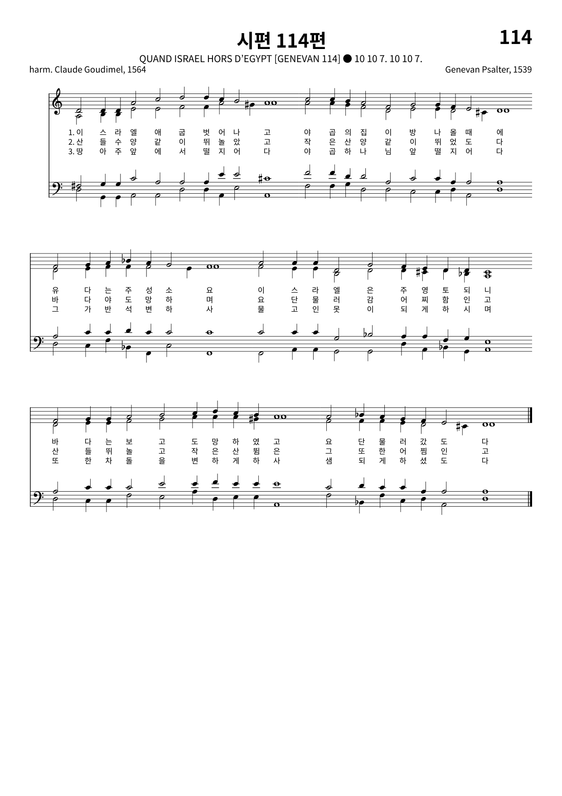

Psalm 114
QUAND ISRAEL HORS D’EGYPT [GENEVAN 114] · 10 10 7. 10 10 7.
English title: When Israel Escaped from Egypt’s Reach
Tune: Genevan Psalter, 1539 · Harmony: Claude Goudimel, 1564 · Lyrics: Korean adaptation of Psalm 114 from the Korean Revised Version (AI draft adaptation · not yet theologically reviewed) · 3 stanzas
Score PDF MusicXML (for printing) MusicXML (for accompaniment, with prelude and repeats) Read Psalm 114 (Korean Revised Version)
Score
← Psalm 113 ListAccompaniment (in preparation)Psalm 115 →
Lyrics (Korean)
Stanza 1
이스라엘 애굽 벗어나고
야곱의 집 이방 나올 때에
유다는 주 성소요
이스라엘은 주 영토 되니
바다는 보고 도망하였고
요단 물러갔도다
이스라엘 애굽 벗어나고
야곱의 집 이방 나올 때에
유다는 주 성소요
이스라엘은 주 영토 되니
바다는 보고 도망하였고
요단 물러갔도다
Stanza 2
산들 수양 같이 뛰놀았고
작은 산 양 같이 뛰었도다
바다야 도망하며
요단 물러감 어찌함인고
산들 뛰놀고 작은 산 뜀은
그 또한 어찜인고
산들 수양 같이 뛰놀았고
작은 산 양 같이 뛰었도다
바다야 도망하며
요단 물러감 어찌함인고
산들 뛰놀고 작은 산 뜀은
그 또한 어찜인고
Stanza 3
땅아 주 앞에서 떨지어다
야곱 하나님 앞 떨지어다
그가 반석 변하사
물 고인 못이 되게 하시며
또한 차돌을 변하게 하사
샘 되게 하셨도다
땅아 주 앞에서 떨지어다
야곱 하나님 앞 떨지어다
그가 반석 변하사
물 고인 못이 되게 하시며
또한 차돌을 변하게 하사
샘 되게 하셨도다